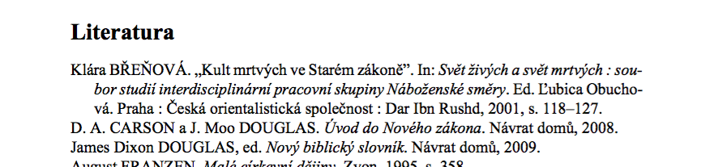

Že v LaTeXu sázejí matematici, fyzici, ajťáci a další verbež není zas tak překvapivé. A kdyby to s ním nebylo tak složité, možná by leccos nabídl i pro nás humanitně zaměřené. Tak si pojďme ukázat, že to zas tak složité není a že se spousta problémů, kvůli kterým si trháme vlasy, dá řešit elegantně.
Tip #3 - citace podle ČČH (pořadí jmen)
Jak tomu bývá, ani historici se nemohou dohodnout na jedné závazné formě citací a tak každý používá takový formát, jaký se mu zrovna líbí. Existující normy se berou spíše jako doporučení a tak často záleží na zlovůli vedoucího vaší práce, jakou podobu bibliografie po vás bude chtít.
Asi nejčastěji po vás budou požadovat citace podle Českého časopisu historického. Ten má od výchozího nastavení LaTeXu tak, jak jsme si ho ukázali minule, řadu odlišností. Tou nejvýraznější je pořadí Jméno, PŘÍJMENÍ. Jak ho prohodit i v našich dokumentech?
Jde to jednoduše pomocí dvou příkazů, které se vloží ještě před začátek dokumentu:
\DeclareNameAlias{sortname}{first-last}
\DeclareNameAlias{default}{first-last}
Výsledek pak vypadá nějak takto:
Pokud stále nevíte, jak na to, tady máte živou ukázku.